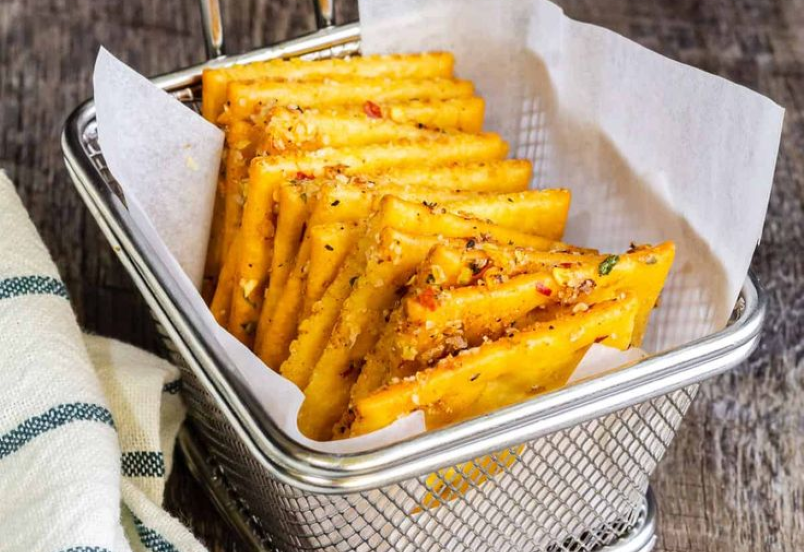
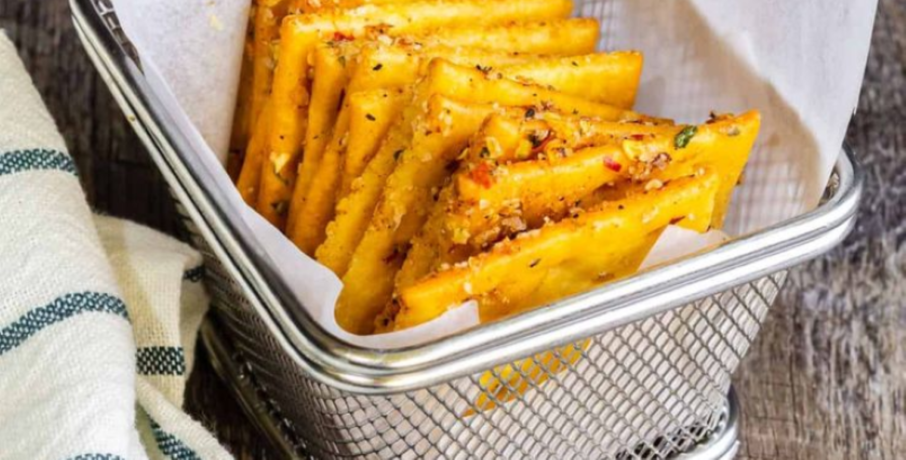

Antipasti
Panelle:
- 500g di farina di ceci
- 20g di sale fino
- olio di sei (per friggere)
- 1 ciffo di prezzemolo
- 1,4L di acqua


Procedimento:
- Per preparare le panelle come prima cosa versate la farina di ceci in una pentola capiente. Aggiungete il sale e mescolate le polveri a secco. Ora versate l'acqua a filo, tenendone indietro una dose e iniziate a mescolare con una frusta, in modo che no si creino grumi. Mescolate dal centro verso l'esterno
- Versate lentamente l'acqua rimasta, continuando sempre a mescolare. La consistenza in questo momento dovrà essere piuttosto liquida, ma sollevando il composto con un cucchiaio dovrà fare "il filo". Tritate il prezzemolo grossolanamente: le foglie dovranno restare quasi intere.
- Ponete sul fuoco il tegame e mescolate di continuo, quando inizierà ad addensarsi la farina, inizierà la vera e propria cottura, bisognerà mescolare con più energia. Ci vorranno circa 30 minuti perchè si arrivi al giusto grado di consistenza. A quel punto aggiungete il prezzemolo e mescolate ancora per distribuirlo uniformemente. Una volta ottenuto un composto omogeneo spegnete il fuoco.
- Prelevate un po' di impasto e utilizzando una spatola stendetelo su un piano di marmo, sino ad ottenere uno spessore di 4-5 mm. Lasciate raffreddare leggermente, in questo modo sarà più semplice. Rifilate i bordi utilizzando un coltello o un tarocco.
- Cercate di ottenere un rettangolo preciso alto circa 5 cm. Da questo ricavate quindi dei rettangolini larghi circa 10 cm. Ripetete quest'operazione stendendo di fianco altro impasto e realizzate così altre panelle. Con queste dosi ne otterrete circa.
- Scaldate abbondante olio in un tegame. Immergete poche panelle per volta e cuocetele fino a che non saranno dorate, girandole su entrambi i lati. Ci vorranno circa 3 minuti. In questo modo si formerà la classica "camicia" e risulteranno croccanti all'esterno e morbide dentro. Scolatele e trasferitele su carta assorbente. Proseguite in questo modo la cottura. Una volta fritte le panelle potrete scegliere se gustarle da sole o se utilizzarle per farcire i panini